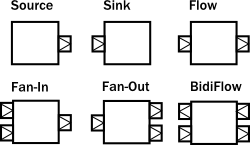
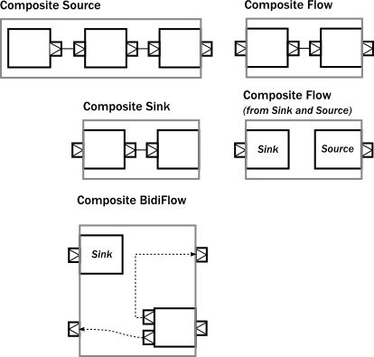

Modularity, Composition and Hierarchy
Dependency
To use Akka Streams, add the module to your project:
- sbt
libraryDependencies += "com.typesafe.akka" %% "akka-stream" % "2.5-SNAPSHOT"- Maven
<dependency> <groupId>com.typesafe.akka</groupId> <artifactId>akka-stream_2.12</artifactId> <version>2.5-SNAPSHOT</version> </dependency>- Gradle
dependencies { compile group: 'com.typesafe.akka', name: 'akka-stream_2.12', version: '2.5-SNAPSHOT' }
Introduction
Akka Streams provide a uniform model of stream processing graphs, which allows flexible composition of reusable components. In this chapter we show how these look like from the conceptual and API perspective, demonstrating the modularity aspects of the library.
Basics of composition and modularity
Every operator used in Akka Streams can be imagined as a “box” with input and output ports where elements to be processed arrive and leave the operator. In this view, a Source is nothing else than a “box” with a single output port, or, a BidiFlow is a “box” with exactly two input and two output ports. In the figure below we illustrate the most commonly used operators viewed as “boxes”.

The linear operators are Source, Sink and Flow, as these can be used to compose strict chains of operators. Fan-in and Fan-out operators have usually multiple input or multiple output ports, therefore they allow to build more complex graph layouts, not only chains. BidiFlow operators are usually useful in IO related tasks, where there are input and output channels to be handled. Due to the specific shape of BidiFlow it is easy to stack them on top of each other to build a layered protocol for example. The TLS support in Akka is for example implemented as a BidiFlow.
These reusable components already allow the creation of complex processing networks. What we have seen so far does not implement modularity though. It is desirable for example to package up a larger graph entity into a reusable component which hides its internals only exposing the ports that are meant to the users of the module to interact with. One good example is the Http server component, which is encoded internally as a BidiFlow which interfaces with the client TCP connection using an input-output port pair accepting and sending ByteString s, while its upper ports emit and receive HttpRequest and HttpResponse instances.
The following figure demonstrates various composite operators, that contain various other type of operators internally, but hiding them behind a shape that looks like a Source, Flow, etc.

One interesting example above is a Flow which is composed of a disconnected Sink and Source. This can be achieved by using the fromSinkAndSource() constructor method on Flow which takes the two parts as parameters.
Please note that when combining a Flow using that method, the termination signals are not carried “through” as the Sink and Source are assumed to be fully independent. If however you want to construct a Flow like this but need the termination events to trigger “the other side” of the composite flow, you can use CoupledTerminationFlow.fromSinkAndSource which does just that. For example the cancelation of the composite flows source-side will then lead to completion of its sink-side. Read CoupledTerminationFlow’s scaladoc for a detailed explanation how this works.
The example BidiFlow demonstrates that internally a module can be of arbitrary complexity, and the exposed ports can be wired in flexible ways. The only constraint is that all the ports of enclosed modules must be either connected to each other, or exposed as interface ports, and the number of such ports needs to match the requirement of the shape, for example a Source allows only one exposed output port, the rest of the internal ports must be properly connected.
These mechanics allow arbitrary nesting of modules. For example the following figure demonstrates a RunnableGraph that is built from a composite Source and a composite Sink (which in turn contains a composite Flow).

The above diagram contains one more shape that we have not seen yet, which is called RunnableGraph. It turns out, that if we wire all exposed ports together, so that no more open ports remain, we get a module that is closed. This is what the RunnableGraph class represents. This is the shape that a Materializer can take and turn into a network of running entities that perform the task described. In fact, a RunnableGraph is a module itself, and (maybe somewhat surprisingly) it can be used as part of larger graphs. It is rarely useful to embed a closed graph shape in a larger graph (since it becomes an isolated island as there are no open port for communication with the rest of the graph), but this demonstrates the uniform underlying model.
If we try to build a code snippet that corresponds to the above diagram, our first try might look like this:
- Scala
-
Source.single(0) .map(_ + 1) .filter(_ != 0) .map(_ - 2) .to(Sink.fold(0)(_ + _)) // ... where is the nesting? - Java
-
Source.single(0) .map(i -> i + 1) .filter(i -> i != 0) .map(i -> i - 2) .to(Sink.fold(0, (acc, i) -> acc + i)); // ... where is the nesting?
It is clear however that there is no nesting present in our first attempt, since the library cannot figure out where we intended to put composite module boundaries, it is our responsibility to do that. If we are using the DSL provided by the Flow, Source, Sink classes then nesting can be achieved by calling one of the methods withAttributes() or named() (where the latter is a shorthand for adding a name attribute).
The following code demonstrates how to achieve the desired nesting:
- Scala
-
val nestedSource = Source.single(0) // An atomic source .map(_ + 1) // an atomic processing stage .named("nestedSource") // wraps up the current Source and gives it a name val nestedFlow = Flow[Int].filter(_ != 0) // an atomic processing stage .map(_ - 2) // another atomic processing stage .named("nestedFlow") // wraps up the Flow, and gives it a name val nestedSink = nestedFlow.to(Sink.fold(0)(_ + _)) // wire an atomic sink to the nestedFlow .named("nestedSink") // wrap it up // Create a RunnableGraph val runnableGraph = nestedSource.to(nestedSink) - Java
-
final Source<Integer, NotUsed> nestedSource = Source.single(0) // An atomic source .map(i -> i + 1) // an atomic processing stage .named("nestedSource"); // wraps up the current Source and gives it a name final Flow<Integer, Integer, NotUsed> nestedFlow = Flow.of(Integer.class) .filter(i -> i != 0) // an atomic processing stage .map(i -> i - 2) // another atomic processing stage .named("nestedFlow"); // wraps up the Flow, and gives it a name final Sink<Integer, NotUsed> nestedSink = nestedFlow .to(Sink.fold(0, (acc, i) -> acc + i)) // wire an atomic sink to the nestedFlow .named("nestedSink"); // wrap it up // Create a RunnableGraph final RunnableGraph<NotUsed> runnableGraph = nestedSource.to(nestedSink);
Once we have hidden the internals of our components, they act like any other built-in component of similar shape. If we hide some of the internals of our composites, the result looks just like if any other predefine component has been used:

If we look at usage of built-in components, and our custom components, there is no difference in usage as the code snippet below demonstrates.
- Scala
-
// Create a RunnableGraph from our components val runnableGraph = nestedSource.to(nestedSink) // Usage is uniform, no matter if modules are composite or atomic val runnableGraph2 = Source.single(0).to(Sink.fold(0)(_ + _)) - Java
-
// Create a RunnableGraph from our components final RunnableGraph<NotUsed> runnableGraph = nestedSource.to(nestedSink); // Usage is uniform, no matter if modules are composite or atomic final RunnableGraph<NotUsed> runnableGraph2 = Source.single(0).to(Sink.fold(0, (acc, i) -> acc + i));
Composing complex systems
In the previous section we explored the possibility of composition, and hierarchy, but we stayed away from non-linear, generalized operators. There is nothing in Akka Streams though that enforces that stream processing layouts can only be linear. The DSL for Source and friends is optimized for creating such linear chains, as they are the most common in practice. There is a more advanced DSL for building complex graphs, that can be used if more flexibility is needed. We will see that the difference between the two DSLs is only on the surface: the concepts they operate on are uniform across all DSLs and fit together nicely.
As a first example, let’s look at a more complex layout:

The diagram shows a RunnableGraph (remember, if there are no unwired ports, the graph is closed, and therefore can be materialized) that encapsulates a non-trivial stream processing network. It contains fan-in, fan-out operators, directed and non-directed cycles. The runnable() method of the GraphDSL object allows the creation of a general, closed, and runnable graph. For example the network on the diagram can be realized like this:
- Scala
-
import GraphDSL.Implicits._ RunnableGraph.fromGraph(GraphDSL.create() { implicit builder => val A: Outlet[Int] = builder.add(Source.single(0)).out val B: UniformFanOutShape[Int, Int] = builder.add(Broadcast[Int](2)) val C: UniformFanInShape[Int, Int] = builder.add(Merge[Int](2)) val D: FlowShape[Int, Int] = builder.add(Flow[Int].map(_ + 1)) val E: UniformFanOutShape[Int, Int] = builder.add(Balance[Int](2)) val F: UniformFanInShape[Int, Int] = builder.add(Merge[Int](2)) val G: Inlet[Any] = builder.add(Sink.foreach(println)).in C <~ F A ~> B ~> C ~> F B ~> D ~> E ~> F E ~> G ClosedShape }) - Java
-
RunnableGraph.fromGraph( GraphDSL.create( builder -> { final Outlet<Integer> A = builder.add(Source.single(0)).out(); final UniformFanOutShape<Integer, Integer> B = builder.add(Broadcast.create(2)); final UniformFanInShape<Integer, Integer> C = builder.add(Merge.create(2)); final FlowShape<Integer, Integer> D = builder.add(Flow.of(Integer.class).map(i -> i + 1)); final UniformFanOutShape<Integer, Integer> E = builder.add(Balance.create(2)); final UniformFanInShape<Integer, Integer> F = builder.add(Merge.create(2)); final Inlet<Integer> G = builder.add(Sink.<Integer>foreach(System.out::println)).in(); builder.from(F).toFanIn(C); builder.from(A).viaFanOut(B).viaFanIn(C).toFanIn(F); builder.from(B).via(D).viaFanOut(E).toFanIn(F); builder.from(E).toInlet(G); return ClosedShape.getInstance(); }));
In the code above we used the implicit port numbering feature (to make the graph more readable and similar to the diagram) and we imported Source s, Sink s and Flow s explicitly. It is possible to refer to the ports explicitly, and it is not necessary to import our linear operators via add(), so another version might look like this:
- Scala
-
import GraphDSL.Implicits._ RunnableGraph.fromGraph(GraphDSL.create() { implicit builder => val B = builder.add(Broadcast[Int](2)) val C = builder.add(Merge[Int](2)) val E = builder.add(Balance[Int](2)) val F = builder.add(Merge[Int](2)) Source.single(0) ~> B.in; B.out(0) ~> C.in(1); C.out ~> F.in(0) C.in(0) <~ F.out B.out(1).map(_ + 1) ~> E.in; E.out(0) ~> F.in(1) E.out(1) ~> Sink.foreach(println) ClosedShape }) - Java
-
RunnableGraph.fromGraph( GraphDSL.create( builder -> { final SourceShape<Integer> A = builder.add(Source.single(0)); final UniformFanOutShape<Integer, Integer> B = builder.add(Broadcast.create(2)); final UniformFanInShape<Integer, Integer> C = builder.add(Merge.create(2)); final FlowShape<Integer, Integer> D = builder.add(Flow.of(Integer.class).map(i -> i + 1)); final UniformFanOutShape<Integer, Integer> E = builder.add(Balance.create(2)); final UniformFanInShape<Integer, Integer> F = builder.add(Merge.create(2)); final SinkShape<Integer> G = builder.add(Sink.foreach(System.out::println)); builder.from(F.out()).toInlet(C.in(0)); builder.from(A).toInlet(B.in()); builder.from(B.out(0)).toInlet(C.in(1)); builder.from(C.out()).toInlet(F.in(0)); builder.from(B.out(1)).via(D).toInlet(E.in()); builder.from(E.out(0)).toInlet(F.in(1)); builder.from(E.out(1)).to(G); return ClosedShape.getInstance(); }));
Similar to the case in the first section, so far we have not considered modularity. We created a complex graph, but the layout is flat, not modularized. We will modify our example, and create a reusable component with the graph DSL. The way to do it is to use the create() factory method on GraphDSL. If we remove the sources and sinks from the previous example, what remains is a partial graph:

We can recreate a similar graph in code, using the DSL in a similar way than before:
- Scala
-
import GraphDSL.Implicits._ val partial = GraphDSL.create() { implicit builder => val B = builder.add(Broadcast[Int](2)) val C = builder.add(Merge[Int](2)) val E = builder.add(Balance[Int](2)) val F = builder.add(Merge[Int](2)) C <~ F B ~> C ~> F B ~> Flow[Int].map(_ + 1) ~> E ~> F FlowShape(B.in, E.out(1)) }.named("partial") - Java
-
final Graph<FlowShape<Integer, Integer>, NotUsed> partial = GraphDSL.create( builder -> { final UniformFanOutShape<Integer, Integer> B = builder.add(Broadcast.create(2)); final UniformFanInShape<Integer, Integer> C = builder.add(Merge.create(2)); final UniformFanOutShape<Integer, Integer> E = builder.add(Balance.create(2)); final UniformFanInShape<Integer, Integer> F = builder.add(Merge.create(2)); builder.from(F.out()).toInlet(C.in(0)); builder.from(B).viaFanIn(C).toFanIn(F); builder .from(B) .via(builder.add(Flow.of(Integer.class).map(i -> i + 1))) .viaFanOut(E) .toFanIn(F); return new FlowShape<Integer, Integer>(B.in(), E.out(1)); });
The only new addition is the return value of the builder block, which is a Shape. All operators (including Source, BidiFlow, etc) have a shape, which encodes the typed ports of the module. In our example there is exactly one input and output port left, so we can declare it to have a FlowShape by returning an instance of it. While it is possible to create new Shape types, it is usually recommended to use one of the matching built-in ones.
The resulting graph is already a properly wrapped module, so there is no need to call named() to encapsulate the graph, but it is a good practice to give names to modules to help debugging.

Since our partial graph has the right shape, it can be already used in the simpler, linear DSL:
- Scala
-
Source.single(0).via(partial).to(Sink.ignore) - Java
-
Source.single(0).via(partial).to(Sink.ignore());
It is not possible to use it as a Flow yet, though (i.e. we cannot call .filter() on it), but Flow has a fromGraph() method that adds the DSL to a FlowShape. There are similar methods on Source, Sink and BidiShape, so it is easy to get back to the simpler DSL if an operator has the right shape. For convenience, it is also possible to skip the partial graph creation, and use one of the convenience creator methods. To demonstrate this, we will create the following graph:

The code version of the above closed graph might look like this:
- Scala
-
// Convert the partial graph of FlowShape to a Flow to get // access to the fluid DSL (for example to be able to call .filter()) val flow = Flow.fromGraph(partial) // Simple way to create a graph backed Source val source = Source.fromGraph( GraphDSL.create() { implicit builder => val merge = builder.add(Merge[Int](2)) Source.single(0) ~> merge Source(List(2, 3, 4)) ~> merge // Exposing exactly one output port SourceShape(merge.out) }) // Building a Sink with a nested Flow, using the fluid DSL val sink = { val nestedFlow = Flow[Int].map(_ * 2).drop(10).named("nestedFlow") nestedFlow.to(Sink.head) } // Putting all together val closed = source.via(flow.filter(_ > 1)).to(sink) - Java
-
// Convert the partial graph of FlowShape to a Flow to get // access to the fluid DSL (for example to be able to call .filter()) final Flow<Integer, Integer, NotUsed> flow = Flow.fromGraph(partial); // Simple way to create a graph backed Source final Source<Integer, NotUsed> source = Source.fromGraph( GraphDSL.create( builder -> { final UniformFanInShape<Integer, Integer> merge = builder.add(Merge.create(2)); builder.from(builder.add(Source.single(0))).toFanIn(merge); builder.from(builder.add(Source.from(Arrays.asList(2, 3, 4)))).toFanIn(merge); // Exposing exactly one output port return new SourceShape<Integer>(merge.out()); })); // Building a Sink with a nested Flow, using the fluid DSL final Sink<Integer, NotUsed> sink = Flow.of(Integer.class).map(i -> i * 2).drop(10).named("nestedFlow").to(Sink.head()); // Putting all together final RunnableGraph<NotUsed> closed = source.via(flow.filter(i -> i > 1)).to(sink);
All graph builder sections check if the resulting graph has all ports connected except the exposed ones and will throw an exception if this is violated.
We are still in debt of demonstrating that RunnableGraph is a component like any other, which can be embedded in graphs. In the following snippet we embed one closed graph in another:
- Scala
-
val closed1 = Source.single(0).to(Sink.foreach(println)) val closed2 = RunnableGraph.fromGraph(GraphDSL.create() { implicit builder ⇒ val embeddedClosed: ClosedShape = builder.add(closed1) // … embeddedClosed }) - Java
-
final RunnableGraph<NotUsed> closed1 = Source.single(0).to(Sink.foreach(System.out::println)); final RunnableGraph<NotUsed> closed2 = RunnableGraph.fromGraph( GraphDSL.create( builder -> { final ClosedShape embeddedClosed = builder.add(closed1); return embeddedClosed; // Could return ClosedShape.getInstance() }));
The type of the imported module indicates that the imported module has a ClosedShape, and so we are not able to wire it to anything else inside the enclosing closed graph. Nevertheless, this “island” is embedded properly, and will be materialized just like any other module that is part of the graph.
As we have demonstrated, the two DSLs are fully interoperable, as they encode a similar nested structure of “boxes with ports”, it is only the DSLs that differ to be as much powerful as possible on the given abstraction level. It is possible to embed complex graphs in the fluid DSL, and it is just as easy to import and embed a Flow, etc, in a larger, complex structure.
We have also seen, that every module has a Shape (for example a Sink has a SinkShape) independently which DSL was used to create it. This uniform representation enables the rich composability of various stream processing entities in a convenient way.
Materialized values
After realizing that RunnableGraph is nothing more than a module with no unused ports (it is an island), it becomes clear that after materialization the only way to communicate with the running stream processing logic is via some side-channel. This side channel is represented as a materialized value. The situation is similar to Actor s, where the Props instance describes the actor logic, but it is the call to actorOf() that creates an actually running actor, and returns an ActorRef that can be used to communicate with the running actor itself. Since the Props can be reused, each call will return a different reference.
When it comes to streams, each materialization creates a new running network corresponding to the blueprint that was encoded in the provided RunnableGraph. To be able to interact with the running network, each materialization needs to return a different object that provides the necessary interaction capabilities. In other words, the RunnableGraph can be seen as a factory, which creates:
- a network of running processing entities, inaccessible from the outside
- a materialized value, optionally providing a controlled interaction capability with the network
Unlike actors though, each of the operators might provide a materialized value, so when we compose multiple operators or modules, we need to combine the materialized value as well (there are default rules which make this easier, for example to() and via() takes care of the most common case of taking the materialized value to the left. See Combining materialized values for details). We demonstrate how this works by a code example and a diagram which graphically demonstrates what is happening.
The propagation of the individual materialized values from the enclosed modules towards the top will look like this:
To implement the above, first, we create a composite Source, where the enclosed Source have a materialized type of Promise[[Option[Int]] CompletableFuture<Optional<Integer>>>. By using the combiner function Keep.left, the resulting materialized type is of the nested module (indicated by the color red on the diagram):
- Scala
-
// Materializes to Promise[Option[Int]] (red) val source: Source[Int, Promise[Option[Int]]] = Source.maybe[Int] // Materializes to NotUsed (black) val flow1: Flow[Int, Int, NotUsed] = Flow[Int].take(100) // Materializes to Promise[Int] (red) val nestedSource: Source[Int, Promise[Option[Int]]] = source.viaMat(flow1)(Keep.left).named("nestedSource") - Java
-
// Materializes to CompletableFuture<Optional<Integer>> (red) final Source<Integer, CompletableFuture<Optional<Integer>>> source = Source.<Integer>maybe(); // Materializes to NotUsed (black) final Flow<Integer, Integer, NotUsed> flow1 = Flow.of(Integer.class).take(100); // Materializes to CompletableFuture<Optional<Integer>> (red) final Source<Integer, CompletableFuture<Optional<Integer>>> nestedSource = source.viaMat(flow1, Keep.left()).named("nestedSource");
Next, we create a composite Flow from two smaller components. Here, the second enclosed Flow has a materialized type of Future[OutgoingConnection] CompletionStage<OutgoingConnection>, and we propagate this to the parent by using Keep.right as the combiner function (indicated by the color yellow on the diagram):
- Scala
-
// Materializes to NotUsed (orange) val flow2: Flow[Int, ByteString, NotUsed] = Flow[Int].map { i ⇒ ByteString(i.toString) } // Materializes to Future[OutgoingConnection] (yellow) val flow3: Flow[ByteString, ByteString, Future[OutgoingConnection]] = Tcp().outgoingConnection("localhost", 8080) // Materializes to Future[OutgoingConnection] (yellow) val nestedFlow: Flow[Int, ByteString, Future[OutgoingConnection]] = flow2.viaMat(flow3)(Keep.right).named("nestedFlow") - Java
-
// Materializes to NotUsed (orange) final Flow<Integer, ByteString, NotUsed> flow2 = Flow.of(Integer.class).map(i -> ByteString.fromString(i.toString())); // Materializes to Future<OutgoingConnection> (yellow) final Flow<ByteString, ByteString, CompletionStage<OutgoingConnection>> flow3 = Tcp.get(system).outgoingConnection("localhost", 8080); // Materializes to Future<OutgoingConnection> (yellow) final Flow<Integer, ByteString, CompletionStage<OutgoingConnection>> nestedFlow = flow2.viaMat(flow3, Keep.right()).named("nestedFlow");
As a third step, we create a composite Sink, using our nestedFlow as a building block. In this snippet, both the enclosed Flow and the folding Sink has a materialized value that is interesting for us, so we use Keep.both to get a Pair of them as the materialized type of nestedSink (indicated by the color blue on the diagram)
- Scala
-
// Materializes to Future[String] (green) val sink: Sink[ByteString, Future[String]] = Sink.fold("")(_ + _.utf8String) // Materializes to (Future[OutgoingConnection], Future[String]) (blue) val nestedSink: Sink[Int, (Future[OutgoingConnection], Future[String])] = nestedFlow.toMat(sink)(Keep.both) - Java
-
// Materializes to Future<String> (green) final Sink<ByteString, CompletionStage<String>> sink = Sink.<String, ByteString>fold("", (acc, i) -> acc + i.utf8String()); // Materializes to Pair<Future<OutgoingConnection>, Future<String>> (blue) final Sink<Integer, Pair<CompletionStage<OutgoingConnection>, CompletionStage<String>>> nestedSink = nestedFlow.toMat(sink, Keep.both());
As the last example, we wire together nestedSource and nestedSink and we use a custom combiner function to create a yet another materialized type of the resulting RunnableGraph. This combiner function ignores the Future[String] CompletionStage<String> part, and wraps the other two values in a custom case class MyClass (indicated by color purple on the diagram):
- Scala
-
case class MyClass(private val p: Promise[Option[Int]], conn: OutgoingConnection) { def close() = p.trySuccess(None) } def f( p: Promise[Option[Int]], rest: (Future[OutgoingConnection], Future[String])): Future[MyClass] = { val connFuture = rest._1 connFuture.map(MyClass(p, _)) } // Materializes to Future[MyClass] (purple) val runnableGraph: RunnableGraph[Future[MyClass]] = nestedSource.toMat(nestedSink)(f) - Java
-
static class MyClass { private CompletableFuture<Optional<Integer>> p; private OutgoingConnection conn; public MyClass(CompletableFuture<Optional<Integer>> p, OutgoingConnection conn) { this.p = p; this.conn = conn; } public void close() { p.complete(Optional.empty()); } } static class Combiner { static CompletionStage<MyClass> f( CompletableFuture<Optional<Integer>> p, Pair<CompletionStage<OutgoingConnection>, CompletionStage<String>> rest) { return rest.first().thenApply(c -> new MyClass(p, c)); } }// Materializes to Future<MyClass> (purple) final RunnableGraph<CompletionStage<MyClass>> runnableGraph = nestedSource.toMat(nestedSink, Combiner::f);
The nested structure in the above example is not necessary for combining the materialized values, it demonstrates how the two features work together. See Combining materialized values for further examples of combining materialized values without nesting and hierarchy involved.
Attributes
We have seen that we can use named() to introduce a nesting level in the fluid DSL (and also explicit nesting by using create() from GraphDSL). Apart from having the effect of adding a nesting level, named() is actually a shorthand for calling withAttributes(Attributes.name("someName")). Attributes provide a way to fine-tune certain aspects of the materialized running entity. For example buffer sizes for asynchronous operators can be controlled via attributes (see Buffers for asynchronous operators). When it comes to hierarchic composition, attributes are inherited by nested modules, unless they override them with a custom value.
The code below, a modification of an earlier example sets the inputBuffer attribute on certain modules, but not on others:
- Scala
-
import Attributes._ val nestedSource = Source.single(0) .map(_ + 1) .named("nestedSource") // Wrap, no inputBuffer set val nestedFlow = Flow[Int].filter(_ != 0) .via(Flow[Int].map(_ - 2).withAttributes(inputBuffer(4, 4))) // override .named("nestedFlow") // Wrap, no inputBuffer set val nestedSink = nestedFlow.to(Sink.fold(0)(_ + _)) // wire an atomic sink to the nestedFlow .withAttributes(name("nestedSink") and inputBuffer(3, 3)) // override - Java
-
final Source<Integer, NotUsed> nestedSource = Source.single(0).map(i -> i + 1).named("nestedSource"); // Wrap, no inputBuffer set final Flow<Integer, Integer, NotUsed> nestedFlow = Flow.of(Integer.class) .filter(i -> i != 0) .via( Flow.of(Integer.class) .map(i -> i - 2) .withAttributes(Attributes.inputBuffer(4, 4))) // override .named("nestedFlow"); // Wrap, no inputBuffer set final Sink<Integer, NotUsed> nestedSink = nestedFlow .to(Sink.fold(0, (acc, i) -> acc + i)) // wire an atomic sink to the nestedFlow .withAttributes( Attributes.name("nestedSink").and(Attributes.inputBuffer(3, 3))); // override
The effect is, that each module inherits the inputBuffer attribute from its enclosing parent, unless it has the same attribute explicitly set. nestedSource gets the default attributes from the materializer itself. nestedSink on the other hand has this attribute set, so it will be used by all nested modules. nestedFlow will inherit from nestedSink except the map operator which has again an explicitly provided attribute overriding the inherited one.

This diagram illustrates the inheritance process for the example code (representing the materializer default attributes as the color red, the attributes set on nestedSink as blue and the attributes set on nestedFlow as green).